pacman::p_load(spdep, tmap, sf, ClustGeo,
ggpubr, cluster, factoextra, NbClust,
heatmaply, corrplot, psych, tidyverse, GGally)Nor Hendra
Geospatial Analytics & Applications
Hands-on Exercise 6: Geographical Segmentation with Spatially Constrained Clustering Techniques
1. Learning Outcome
The previous exercises tested whether values cluster in space. This one builds the clusters. The task is to take 55 townships of Shan State, Myanmar, six ICT ownership measures from the 2014 census, and carve the state into six homogeneous regions. Three methods get used on the same data: ordinary hierarchical clustering with hclust(), SKATER from spdep, and the ClustGeo algorithm, the last two of which force the resulting regions to respect geography.
The interesting question is not which method produces the prettiest map. It is what a spatial constraint costs. A clustering algorithm that ignores geography will always find more homogeneous groups than one that cannot split a region into disconnected pieces, so the comparison worth making is how much within-cluster homogeneity gets traded for how much spatial contiguity. I have tried to answer that with numbers at the end rather than by eye.
2. The Data
Two files, in the folder layout I have used for every exercise so far:
myanmar_township_boundaries, an ESRI shapefile of township polygons for the whole of Myanmar, indata/geospatial/. It carries 330 townships and 14 attribute fields.Shan-ICT.csv, an extract of the 2014 Myanmar Population and Housing Census at township level, indata/aspatial/. 55 rows, 11 fields.
Both come from the Myanmar Information Management Unit.
3. Installing and Loading the R Packages
The reference lists rgdal under spatial data handling. That package was archived from CRAN in October 2023 and is not in the p_load() call anyway, so nothing needs loading in its place. sf and spdep cover everything it used to do here.
4. Data Import and Preparation
4.1 Importing geospatial data into R environment
shan_sf <- st_read(dsn = "data/geospatial",
layer = "myanmar_township_boundaries") %>%
filter(ST %in% c("Shan (East)", "Shan (North)", "Shan (South)")) %>%
select(c(2:7))Reading layer `myanmar_township_boundaries' from data source
`/Users/norhendra/norhendra/ISSS626-GAA/Hands-on_Ex/Hands-on_Ex06/data/geospatial'
using driver `ESRI Shapefile'
Simple feature collection with 330 features and 14 fields
Geometry type: MULTIPOLYGON
Dimension: XY
Bounding box: xmin: 92.17275 ymin: 9.671252 xmax: 101.1699 ymax: 28.54554
Geodetic CRS: WGS 84The full shapefile reads in as 330 features with 14 fields, WGS 84, geometry type MULTIPOLYGON. After the filter and the column selection I am left with 55 features and 6 fields.
NoteChecking the filter before trusting it
filter(ST %in% ...) only works if those three strings match the file exactly. The ST field holds 18 distinct values, and the three Shan entries are spelled Shan (East), Shan (North) and Shan (South), with the spacing and capitalisation the filter expects. They contribute 10, 24 and 21 townships, which sums to the 55 the census file has rows for.
shan_sfSimple feature collection with 55 features and 6 fields
Geometry type: MULTIPOLYGON
Dimension: XY
Bounding box: xmin: 96.15107 ymin: 19.29932 xmax: 101.1699 ymax: 24.15907
Geodetic CRS: WGS 84
First 10 features:
ST ST_PCODE DT DT_PCODE TS TS_PCODE
1 Shan (North) MMR015 Mongmit MMR015D008 Mongmit MMR015017
2 Shan (South) MMR014 Taunggyi MMR014D001 Pindaya MMR014006
3 Shan (South) MMR014 Taunggyi MMR014D001 Ywangan MMR014007
4 Shan (South) MMR014 Taunggyi MMR014D001 Pinlaung MMR014009
5 Shan (North) MMR015 Mongmit MMR015D008 Mabein MMR015018
6 Shan (South) MMR014 Taunggyi MMR014D001 Kalaw MMR014005
7 Shan (South) MMR014 Taunggyi MMR014D001 Pekon MMR014010
8 Shan (South) MMR014 Taunggyi MMR014D001 Lawksawk MMR014008
9 Shan (North) MMR015 Kyaukme MMR015D003 Nawnghkio MMR015013
10 Shan (North) MMR015 Kyaukme MMR015D003 Kyaukme MMR015012
geometry
1 MULTIPOLYGON (((96.96001 23...
2 MULTIPOLYGON (((96.7731 21....
3 MULTIPOLYGON (((96.78483 21...
4 MULTIPOLYGON (((96.49518 20...
5 MULTIPOLYGON (((96.66306 24...
6 MULTIPOLYGON (((96.49518 20...
7 MULTIPOLYGON (((97.14738 19...
8 MULTIPOLYGON (((96.94981 22...
9 MULTIPOLYGON (((96.75648 22...
10 MULTIPOLYGON (((96.95498 22...glimpse(shan_sf)Rows: 55
Columns: 7
$ ST <chr> "Shan (North)", "Shan (South)", "Shan (South)", "Shan (South)…
$ ST_PCODE <chr> "MMR015", "MMR014", "MMR014", "MMR014", "MMR015", "MMR014", "…
$ DT <chr> "Mongmit", "Taunggyi", "Taunggyi", "Taunggyi", "Mongmit", "Ta…
$ DT_PCODE <chr> "MMR015D008", "MMR014D001", "MMR014D001", "MMR014D001", "MMR0…
$ TS <chr> "Mongmit", "Pindaya", "Ywangan", "Pinlaung", "Mabein", "Kalaw…
$ TS_PCODE <chr> "MMR015017", "MMR014006", "MMR014007", "MMR014009", "MMR01501…
$ geometry <MULTIPOLYGON [°]> MULTIPOLYGON (((96.96001 23..., MULTIPOLYGON (((…4.2 Importing aspatial data into R environment
ict <- read_csv("data/aspatial/Shan-ICT.csv")summary(ict) District Pcode District Name Township Pcode Township Name
Length :55 Length :55 Length :55 Length :55
N.unique :14 N.unique :14 N.unique :55 N.unique :55
N.blank : 0 N.blank : 0 N.blank : 0 N.blank : 0
Min.nchar:10 Min.nchar: 4 Min.nchar: 9 Min.nchar: 4
Max.nchar:10 Max.nchar: 9 Max.nchar: 9 Max.nchar:10
Total households Radio Television Land line phone
Min. : 3318 Min. : 115 Min. : 728 Min. : 20.0
1st Qu.: 8711 1st Qu.: 1260 1st Qu.: 3744 1st Qu.: 266.5
Median :13685 Median : 2497 Median : 6117 Median : 695.0
Mean :18369 Mean : 4487 Mean :10183 Mean : 929.9
3rd Qu.:23471 3rd Qu.: 6192 3rd Qu.:13906 3rd Qu.:1082.5
Max. :82604 Max. :30176 Max. :62388 Max. :6736.0
Mobile phone Computer Internet at home
Min. : 150 Min. : 20.0 Min. : 8.0
1st Qu.: 2037 1st Qu.: 121.0 1st Qu.: 88.0
Median : 3559 Median : 244.0 Median : 316.0
Mean : 6470 Mean : 575.5 Mean : 760.2
3rd Qu.: 7177 3rd Qu.: 507.0 3rd Qu.: 630.5
Max. :48461 Max. :6705.0 Max. :9746.0 Eleven fields, 55 observations. The spread in Total households is the thing to note: from 3,318 in Matman to 82,604 in Taunggyi, a factor of 25. Any raw count in this table is going to be driven by that.
4.3 Derive new variables using dplyr package
ict_derived <- ict %>%
mutate(`RADIO_PR` = `Radio`/`Total households`*1000) %>%
mutate(`TV_PR` = `Television`/`Total households`*1000) %>%
mutate(`LLPHONE_PR` = `Land line phone`/`Total households`*1000) %>%
mutate(`MPHONE_PR` = `Mobile phone`/`Total households`*1000) %>%
mutate(`COMPUTER_PR` = `Computer`/`Total households`*1000) %>%
mutate(`INTERNET_PR` = `Internet at home`/`Total households`*1000) %>%
rename(`DT_PCODE` =`District Pcode`,`DT`=`District Name`,
`TS_PCODE`=`Township Pcode`, `TS`=`Township Name`,
`TT_HOUSEHOLDS`=`Total households`,
`RADIO`=`Radio`, `TV`=`Television`,
`LLPHONE`=`Land line phone`, `MPHONE`=`Mobile phone`,
`COMPUTER`=`Computer`, `INTERNET`=`Internet at home`) summary(ict_derived) DT_PCODE DT TS_PCODE TS TT_HOUSEHOLDS
Length :55 Length :55 Length :55 Length :55 Min. : 3318
N.unique :14 N.unique :14 N.unique :55 N.unique :55 1st Qu.: 8711
N.blank : 0 N.blank : 0 N.blank : 0 N.blank : 0 Median :13685
Min.nchar:10 Min.nchar: 4 Min.nchar: 9 Min.nchar: 4 Mean :18369
Max.nchar:10 Max.nchar: 9 Max.nchar: 9 Max.nchar:10 3rd Qu.:23471
Max. :82604
RADIO TV LLPHONE MPHONE
Min. : 115 Min. : 728 Min. : 20.0 Min. : 150
1st Qu.: 1260 1st Qu.: 3744 1st Qu.: 266.5 1st Qu.: 2037
Median : 2497 Median : 6117 Median : 695.0 Median : 3559
Mean : 4487 Mean :10183 Mean : 929.9 Mean : 6470
3rd Qu.: 6192 3rd Qu.:13906 3rd Qu.:1082.5 3rd Qu.: 7177
Max. :30176 Max. :62388 Max. :6736.0 Max. :48461
COMPUTER INTERNET RADIO_PR TV_PR
Min. : 20.0 Min. : 8.0 Min. : 21.05 Min. :116.0
1st Qu.: 121.0 1st Qu.: 88.0 1st Qu.:138.95 1st Qu.:450.2
Median : 244.0 Median : 316.0 Median :210.95 Median :517.2
Mean : 575.5 Mean : 760.2 Mean :215.68 Mean :509.5
3rd Qu.: 507.0 3rd Qu.: 630.5 3rd Qu.:268.07 3rd Qu.:606.4
Max. :6705.0 Max. :9746.0 Max. :484.52 Max. :842.5
LLPHONE_PR MPHONE_PR COMPUTER_PR INTERNET_PR
Min. : 2.78 Min. : 36.42 Min. : 3.278 Min. : 1.041
1st Qu.: 22.84 1st Qu.:190.14 1st Qu.:11.832 1st Qu.: 8.617
Median : 37.59 Median :305.27 Median :18.970 Median : 22.829
Mean : 51.09 Mean :314.05 Mean :24.393 Mean : 30.644
3rd Qu.: 69.72 3rd Qu.:428.43 3rd Qu.:29.897 3rd Qu.: 41.281
Max. :181.49 Max. :735.43 Max. :92.402 Max. :117.985 Six new fields land in positions 12 to 17, which is what the correlation step later relies on. Penetration rates per thousand households now range from 21 to 485 for radio, 116 to 843 for television, and 3 to 92 for computers.
5. Exploratory Data Analysis (EDA)
5.1 EDA using statistical graphics
ggplot(data=ict_derived,
aes(x=`RADIO`)) +
geom_histogram(bins=20,
color="black",
fill="light blue")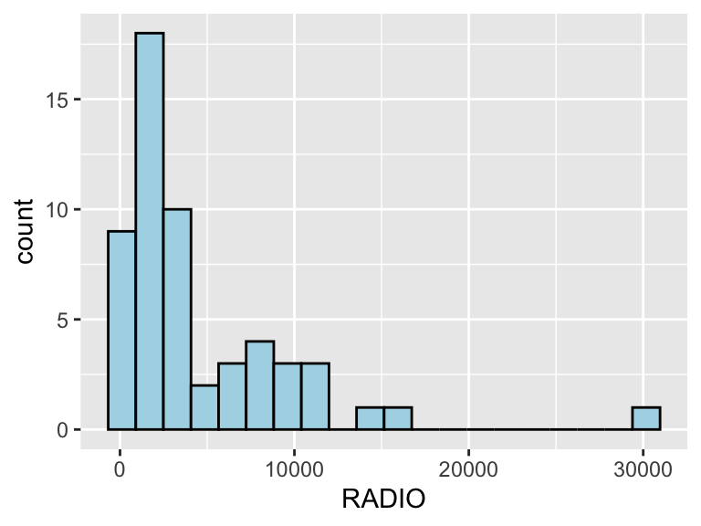
ggplot(data=ict_derived,
aes(x=`RADIO`)) +
geom_boxplot(color="black",
fill="light blue")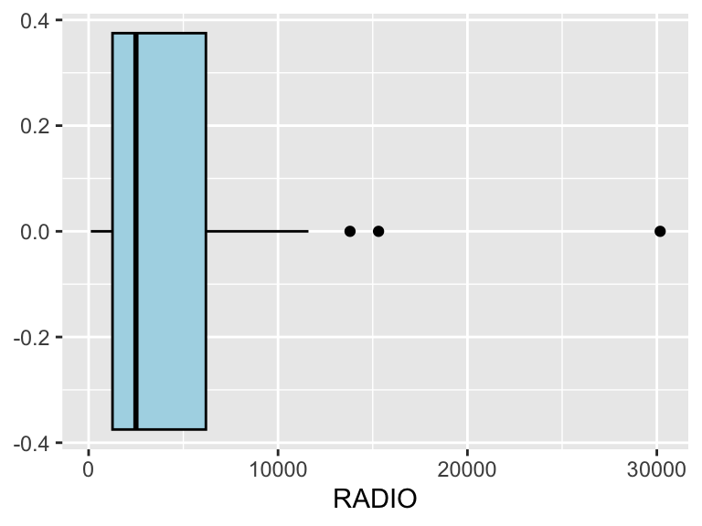
Raw radio counts are strongly right skewed, skewness 2.59, with three townships beyond the upper whisker: Taunggyi at 30,176, Lashio at 15,307 and Nyaungshwe at 13,801. Those are the three largest townships by household count, which is the whole problem the penetration rate is meant to fix.
ggplot(data=ict_derived,
aes(x=`RADIO_PR`)) +
geom_histogram(bins=20,
color="black",
fill="light blue")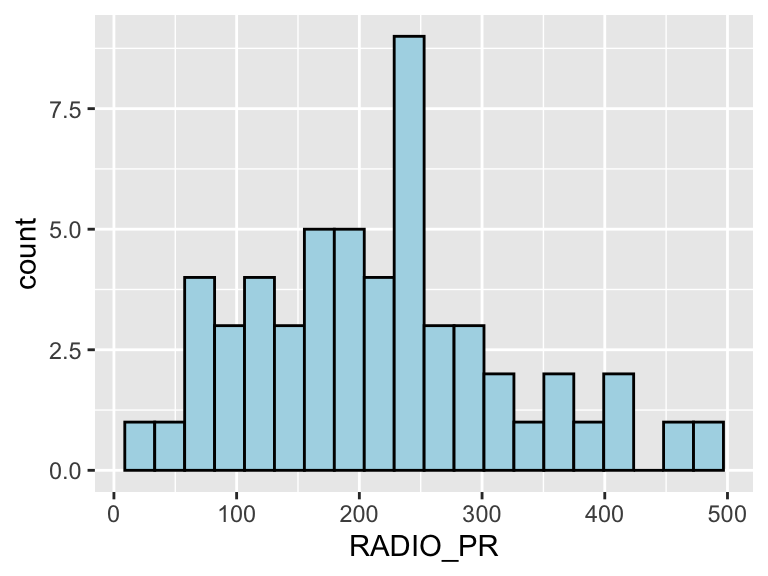
ggplot(data=ict_derived,
aes(x=`RADIO_PR`)) +
geom_boxplot(color="black",
fill="light blue")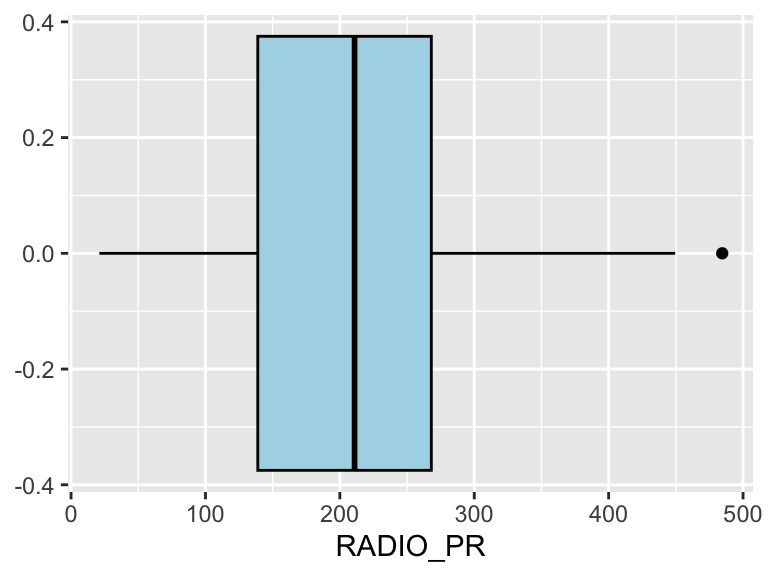
Dividing by household count changes the shape completely. Skewness falls from 2.59 to 0.48, the distribution is close to symmetric, and only one township sits outside the whiskers: Ywangan at 484.5 radios per thousand households. Ywangan reappears later as a cluster of one, so it is worth remembering.
radio <- ggplot(data=ict_derived,
aes(x= `RADIO_PR`)) +
geom_histogram(bins=20,
color="black",
fill="light blue")
tv <- ggplot(data=ict_derived,
aes(x= `TV_PR`)) +
geom_histogram(bins=20,
color="black",
fill="light blue")
llphone <- ggplot(data=ict_derived,
aes(x= `LLPHONE_PR`)) +
geom_histogram(bins=20,
color="black",
fill="light blue")
mphone <- ggplot(data=ict_derived,
aes(x= `MPHONE_PR`)) +
geom_histogram(bins=20,
color="black",
fill="light blue")
computer <- ggplot(data=ict_derived,
aes(x= `COMPUTER_PR`)) +
geom_histogram(bins=20,
color="black",
fill="light blue")
internet <- ggplot(data=ict_derived,
aes(x= `INTERNET_PR`)) +
geom_histogram(bins=20,
color="black",
fill="light blue")
ggarrange(radio, tv, llphone, mphone, computer, internet,
ncol = 3,
nrow = 2)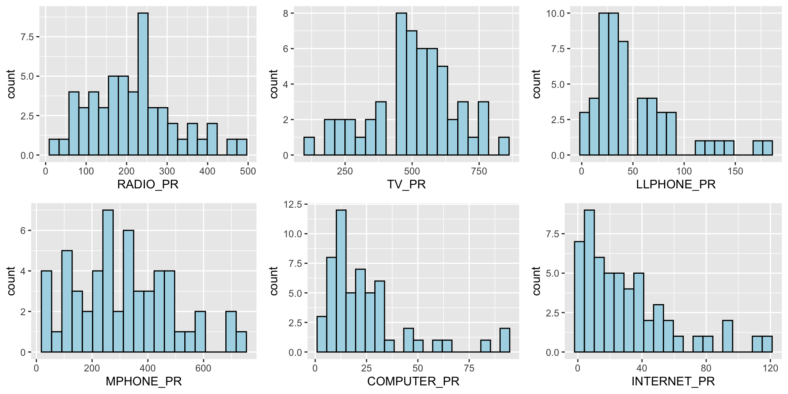
Radio, television and mobile phone are roughly symmetric. Land line, computer and internet are not: their skewness values are 1.4, 1.8 and 1.4, with long right tails driven by a handful of urban townships. That asymmetry matters for the Z-score standardisation later, which assumes something closer to normality than these three offer.
5.2 EDA using choropleth map
5.2.1 Joining geospatial data with aspatial data
shan_sf <- left_join(shan_sf,
ict_derived, by=c("TS_PCODE"="TS_PCODE"))
write_rds(shan_sf, "data/rds/shan_sf.rds")shan_sf <- read_rds("data/rds/shan_sf.rds")
NoteWhat the join actually produced
All 55 township codes match on both sides, no NA values appear in any of the derived columns, and no township name disagrees with its code across the two files. Clean one to one join.
The join also creates duplicate column names, since both tables carry DT, DT_PCODE and TS. dplyr suffixes them, so the result has DT.x and DT.y, TS.x and TS.y. That is why section 7.1 selects TS.x and not TS. The full object is 55 rows by 23 columns, with the five clustering variables sitting at positions 17 to 21 and INTERNET_PR at 22. Section 10.2 indexes those positions directly.
One practical note: write_rds() will not create the folder for you. data/rds/ has to exist before this chunk runs.
5.2.2 Preparing a choropleth map
qtm(shan_sf, fill = "RADIO_PR")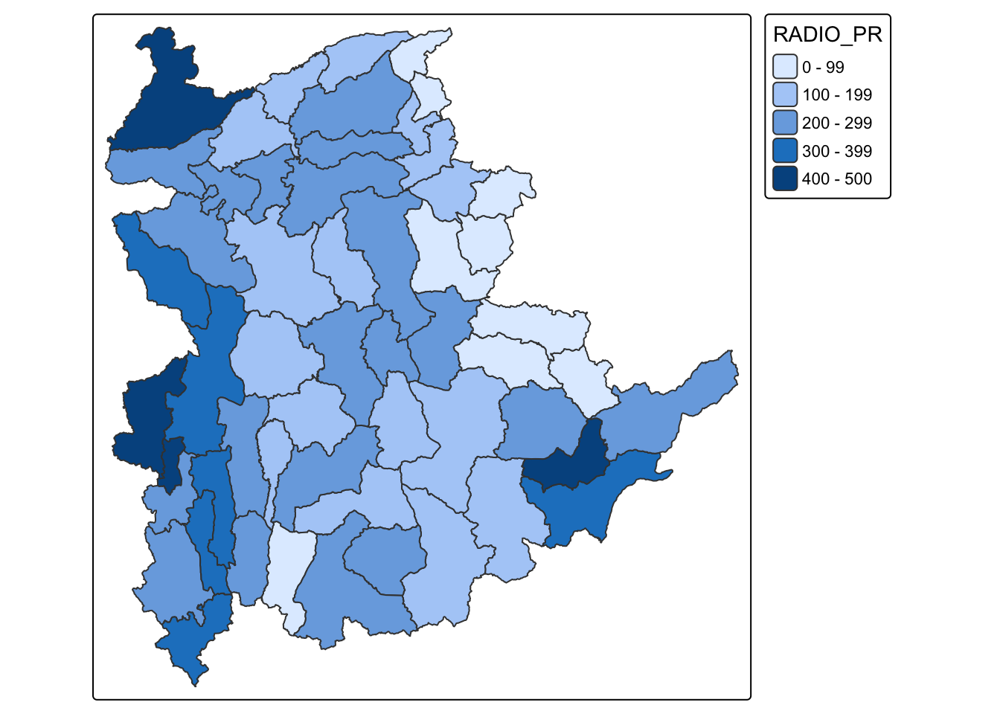
TT_HOUSEHOLDS.map <- tm_shape(shan_sf) +
tm_polygons(fill = "TT_HOUSEHOLDS",
fill.scale = tm_scale_intervals(style = "jenks", n = 5),
fill.legend = tm_legend(title = "Total households")) +
tm_borders(col_alpha = 0.5)
RADIO.map <- tm_shape(shan_sf) +
tm_polygons(fill = "RADIO",
fill.scale = tm_scale_intervals(style = "jenks", n = 5),
fill.legend = tm_legend(title = "Number Radio")) +
tm_borders(col_alpha = 0.5)
tmap_arrange(TT_HOUSEHOLDS.map, RADIO.map,
asp=NA, ncol=2)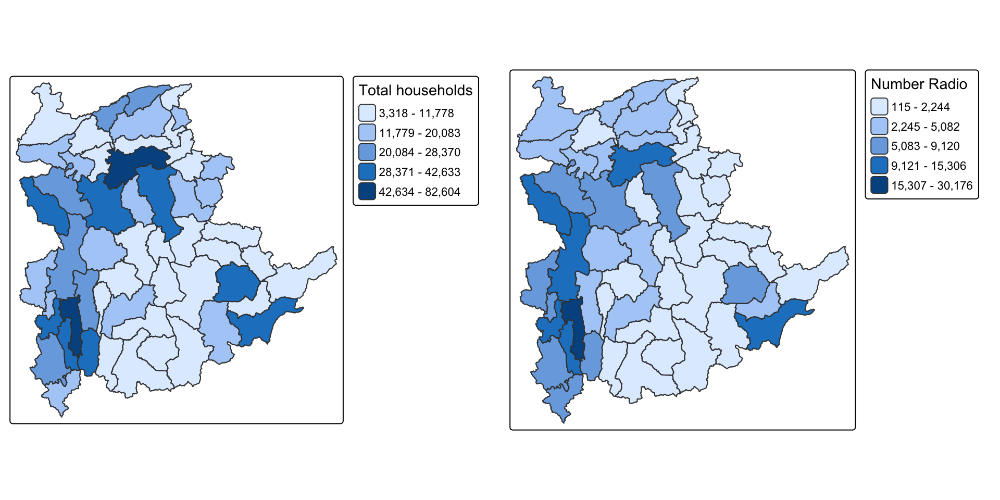
TipTranslating the tmap code
The reference writes these maps in tmap v3 syntax: tm_fill(col = , n = , style = , title = ), tm_borders(alpha = ), and a standalone tm_legend() layer. My environment runs tmap 4, where the classification arguments moved inside tm_scale_intervals(), legends are configured through fill.legend, and border transparency is col_alpha because borders are lines and have no fill. This is the same translation I applied in Exercises 5A and 5B.
qtm() survives unchanged except that the variable now goes in explicitly as fill =.
The reference reads these two maps as showing that townships with more households also own more radios. That is easy to confirm numerically instead of visually: the correlation between TT_HOUSEHOLDS and RADIO is 0.935. Against RADIO_PR it drops to 0.339. The penetration rate removes most, though not all, of the size effect.
tm_shape(shan_sf) +
tm_polygons(fill = c("TT_HOUSEHOLDS", "RADIO_PR"),
fill.scale = tm_scale_intervals(style = "jenks")) +
tm_facets(sync = TRUE, ncol = 2) +
tm_layout(outer.margins = 0)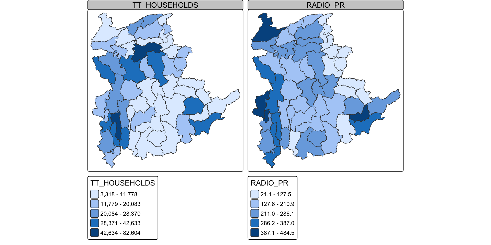
The two panels barely resemble each other. Household counts concentrate in a few large townships in the south and along the Lashio corridor. Radio penetration is highest in the western uplands, which are not the populous ones.
6. Correlation Analysis
cluster_vars.cor = cor(ict_derived[,12:17])
corrplot.mixed(cluster_vars.cor,
lower = "ellipse",
upper = "number",
tl.pos = "lt",
diag = "l",
tl.col = "black")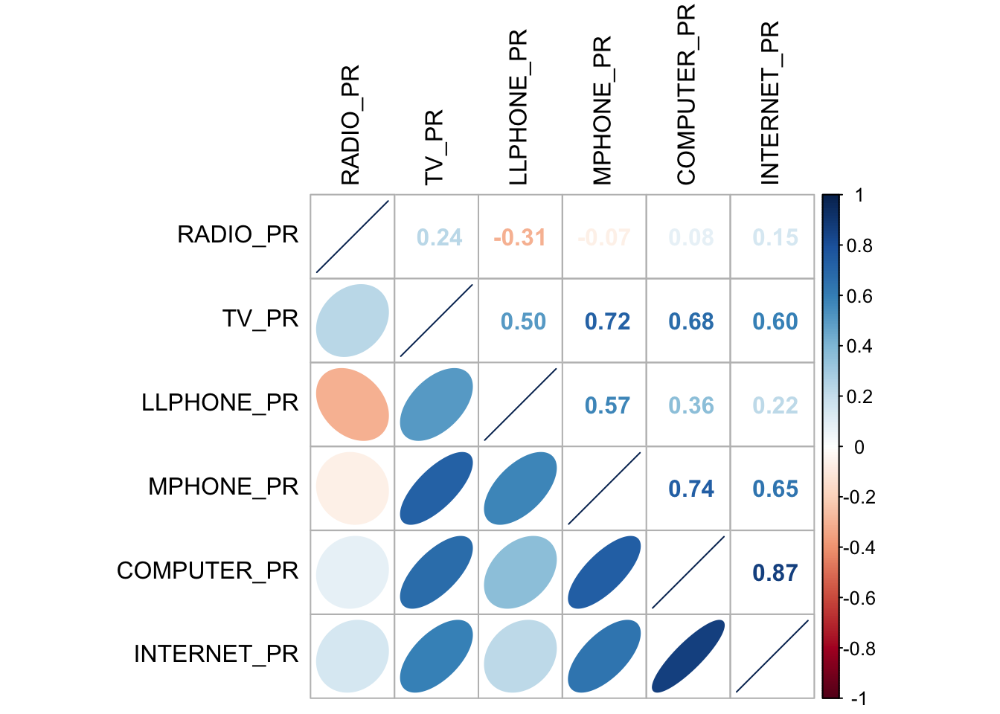
COMPUTER_PR and INTERNET_PR correlate at 0.870, the highest pair in the matrix by a clear margin. The next highest is MPHONE_PR with COMPUTER_PR at 0.737, then TV_PR with MPHONE_PR at 0.722. Dropping one of the computer and internet pair is justified.
Radio is the odd variable out. It correlates at -0.310 with land line, -0.069 with mobile phone and 0.080 with computer. Every other variable in the set moves together as a rough proxy for urbanisation. Radio moves against it, or not at all, which means radio ownership is going to do a lot of work in separating the rural clusters later.
7. Hierarchy Cluster Analysis
7.1 Extracting clustering variables
cluster_vars <- shan_sf %>%
st_set_geometry(NULL) %>%
select("TS.x", "RADIO_PR", "TV_PR", "LLPHONE_PR", "MPHONE_PR", "COMPUTER_PR")
head(cluster_vars,10) TS.x RADIO_PR TV_PR LLPHONE_PR MPHONE_PR COMPUTER_PR
1 Mongmit 286.1852 554.1313 35.30618 260.6944 12.15939
2 Pindaya 417.4647 505.1300 19.83584 162.3917 12.88190
3 Ywangan 484.5215 260.5734 11.93591 120.2856 4.41465
4 Pinlaung 231.6499 541.7189 28.54454 249.4903 13.76255
5 Mabein 449.4903 708.6423 72.75255 392.6089 16.45042
6 Kalaw 280.7624 611.6204 42.06478 408.7951 29.63160
7 Pekon 318.6118 535.8494 39.83270 214.8476 18.97032
8 Lawksawk 387.1017 630.0035 31.51366 320.5686 21.76677
9 Nawnghkio 349.3359 547.9456 38.44960 323.0201 15.76465
10 Kyaukme 210.9548 601.1773 39.58267 372.4930 30.94709INTERNET_PR is out, on the strength of that 0.870 correlation with COMPUTER_PR.
row.names(cluster_vars) <- cluster_vars$"TS.x"
head(cluster_vars,10) TS.x RADIO_PR TV_PR LLPHONE_PR MPHONE_PR COMPUTER_PR
Mongmit Mongmit 286.1852 554.1313 35.30618 260.6944 12.15939
Pindaya Pindaya 417.4647 505.1300 19.83584 162.3917 12.88190
Ywangan Ywangan 484.5215 260.5734 11.93591 120.2856 4.41465
Pinlaung Pinlaung 231.6499 541.7189 28.54454 249.4903 13.76255
Mabein Mabein 449.4903 708.6423 72.75255 392.6089 16.45042
Kalaw Kalaw 280.7624 611.6204 42.06478 408.7951 29.63160
Pekon Pekon 318.6118 535.8494 39.83270 214.8476 18.97032
Lawksawk Lawksawk 387.1017 630.0035 31.51366 320.5686 21.76677
Nawnghkio Nawnghkio 349.3359 547.9456 38.44960 323.0201 15.76465
Kyaukme Kyaukme 210.9548 601.1773 39.58267 372.4930 30.94709shan_ict <- select(cluster_vars, c(2:6))
head(shan_ict, 10) RADIO_PR TV_PR LLPHONE_PR MPHONE_PR COMPUTER_PR
Mongmit 286.1852 554.1313 35.30618 260.6944 12.15939
Pindaya 417.4647 505.1300 19.83584 162.3917 12.88190
Ywangan 484.5215 260.5734 11.93591 120.2856 4.41465
Pinlaung 231.6499 541.7189 28.54454 249.4903 13.76255
Mabein 449.4903 708.6423 72.75255 392.6089 16.45042
Kalaw 280.7624 611.6204 42.06478 408.7951 29.63160
Pekon 318.6118 535.8494 39.83270 214.8476 18.97032
Lawksawk 387.1017 630.0035 31.51366 320.5686 21.76677
Nawnghkio 349.3359 547.9456 38.44960 323.0201 15.76465
Kyaukme 210.9548 601.1773 39.58267 372.4930 30.94709write_rds(shan_ict, "data/rds/shan_ict.rds")shan_ict <- read_rds("data/rds/shan_ict.rds")7.2 Data Standardisation
7.2.1 Min-Max standardisation
shan_ict.std <- normalize(shan_ict)
summary(shan_ict.std) RADIO_PR TV_PR LLPHONE_PR MPHONE_PR
Min. :0.0000 Min. :0.0000 Min. :0.0000 Min. :0.0000
1st Qu.:0.2544 1st Qu.:0.4600 1st Qu.:0.1123 1st Qu.:0.2199
Median :0.4097 Median :0.5523 Median :0.1948 Median :0.3846
Mean :0.4199 Mean :0.5416 Mean :0.2703 Mean :0.3972
3rd Qu.:0.5330 3rd Qu.:0.6750 3rd Qu.:0.3746 3rd Qu.:0.5608
Max. :1.0000 Max. :1.0000 Max. :1.0000 Max. :1.0000
COMPUTER_PR
Min. :0.00000
1st Qu.:0.09598
Median :0.17607
Mean :0.23692
3rd Qu.:0.29868
Max. :1.00000 7.2.2 Z-score standardisation
shan_ict.z <- scale(shan_ict)
describe(shan_ict.z) vars n mean sd median trimmed mad min max range skew kurtosis
RADIO_PR 1 55 0 1 -0.04 -0.06 0.94 -1.85 2.55 4.40 0.48 -0.27
TV_PR 2 55 0 1 0.05 0.04 0.78 -2.47 2.09 4.56 -0.38 -0.23
LLPHONE_PR 3 55 0 1 -0.33 -0.15 0.68 -1.19 3.20 4.39 1.37 1.49
MPHONE_PR 4 55 0 1 -0.05 -0.06 1.01 -1.58 2.40 3.98 0.48 -0.34
COMPUTER_PR 5 55 0 1 -0.26 -0.18 0.64 -1.03 3.31 4.34 1.80 2.96
se
RADIO_PR 0.13
TV_PR 0.13
LLPHONE_PR 0.13
MPHONE_PR 0.13
COMPUTER_PR 0.13Means of 0 and standard deviations of 1, as expected. The skewness column is the useful part: LLPHONE_PR at 1.37 and COMPUTER_PR at 1.80 are not remotely normal, and the warning in the reference about Z-scores assuming normality applies to exactly those two.
7.2.3 Visualising the standardised clustering variables
r <- ggplot(data=ict_derived,
aes(x= `RADIO_PR`)) +
geom_histogram(bins=20,
color="black",
fill="light blue") +
ggtitle("Raw values without standardisation")
shan_ict_s_df <- as.data.frame(shan_ict.std)
s <- ggplot(data=shan_ict_s_df,
aes(x=`RADIO_PR`)) +
geom_histogram(bins=20,
color="black",
fill="light blue") +
ggtitle("Min-Max Standardisation")
shan_ict_z_df <- as.data.frame(shan_ict.z)
z <- ggplot(data=shan_ict_z_df,
aes(x=`RADIO_PR`)) +
geom_histogram(bins=20,
color="black",
fill="light blue") +
ggtitle("Z-score Standardisation")
ggarrange(r, s, z,
ncol = 3,
nrow = 1)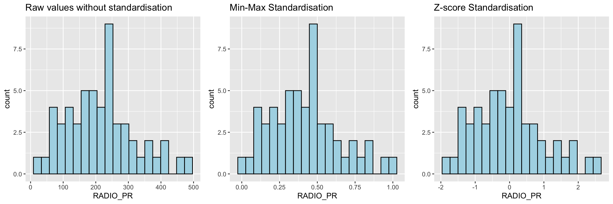
r <- ggplot(data=ict_derived,
aes(x= `RADIO_PR`)) +
geom_density(color="black",
fill="light blue") +
ggtitle("Raw values without standardisation")
s <- ggplot(data=shan_ict_s_df,
aes(x=`RADIO_PR`)) +
geom_density(color="black",
fill="light blue") +
ggtitle("Min-Max Standardisation")
z <- ggplot(data=shan_ict_z_df,
aes(x=`RADIO_PR`)) +
geom_density(color="black",
fill="light blue") +
ggtitle("Z-score Standardisation")
ggarrange(r, s, z,
ncol = 3,
nrow = 1)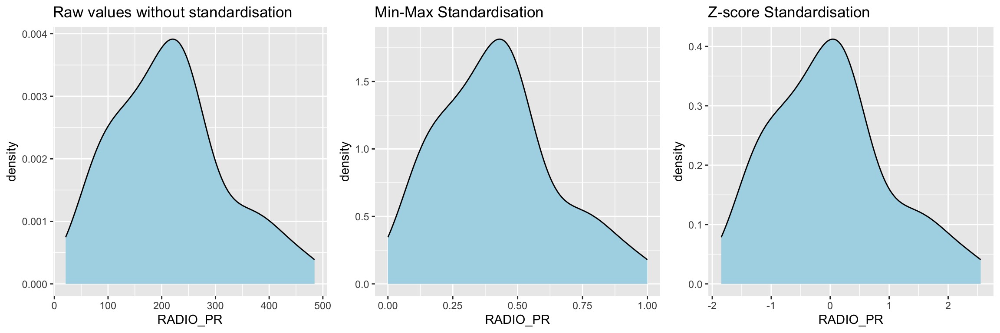
The shape of the distribution does not change across the three panels. Only the axis does. Both standardisations are linear transformations, so they can move a variable’s scale but not its skew.
7.3 Computing proximity matrix
proxmat <- dist(shan_ict, method = 'euclidean')Distances run from 38.5 to 995.7 in penetration-rate units.
proxmat7.4 Computing hierarchical clustering
hclust_ward <- hclust(proxmat, method = 'ward.D')plot(hclust_ward, cex = 0.6)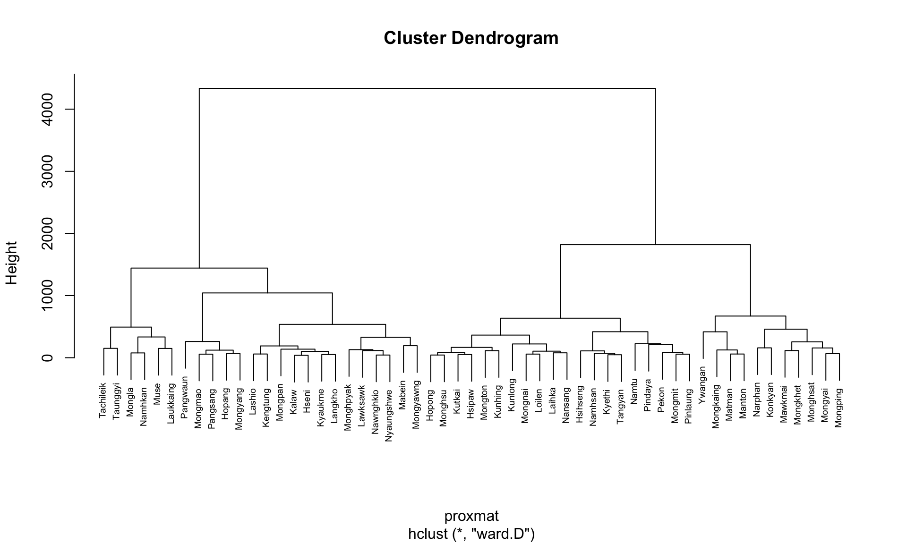
7.5 Selecting the optimal clustering algorithm
m <- c( "average", "single", "complete", "ward")
names(m) <- c( "average", "single", "complete", "ward")
ac <- function(x) {
agnes(shan_ict, method = x)$ac
}
map_dbl(m, ac) average single complete ward
0.8131144 0.6628705 0.8950702 0.9427730 Ward comes out highest at 0.943, then complete at 0.895, average at 0.813 and single at 0.663. The reference reads this as Ward giving the strongest clustering structure, and on this metric it does. Section 11.3 checks the same question with a second diagnostic that disagrees.
7.6 Determining Optimal Clusters
7.6.1 Gap Statistic Method
set.seed(12345)
gap_stat <- clusGap(shan_ict,
FUN = hcut,
nstart = 25,
K.max = 10,
B = 50)
# Print the result
print(gap_stat, method = "firstmax")Clustering Gap statistic ["clusGap"] from call:
clusGap(x = shan_ict, FUNcluster = hcut, K.max = 10, B = 50, nstart = 25)
B=50 simulated reference sets, k = 1..10; spaceH0="scaledPCA"
--> Number of clusters (method 'firstmax'): 1
logW E.logW gap SE.sim
[1,] 8.407129 8.680794 0.2736651 0.04460994
[2,] 8.130029 8.350712 0.2206824 0.03880130
[3,] 7.992265 8.202550 0.2102844 0.03362652
[4,] 7.862224 8.080655 0.2184311 0.03784781
[5,] 7.756461 7.978022 0.2215615 0.03897071
[6,] 7.665594 7.887777 0.2221833 0.03973087
[7,] 7.590919 7.806333 0.2154145 0.04054939
[8,] 7.526680 7.731619 0.2049390 0.04198644
[9,] 7.458024 7.660795 0.2027705 0.04421874
[10,] 7.377412 7.593858 0.2164465 0.04540947fviz_gap_stat(gap_stat)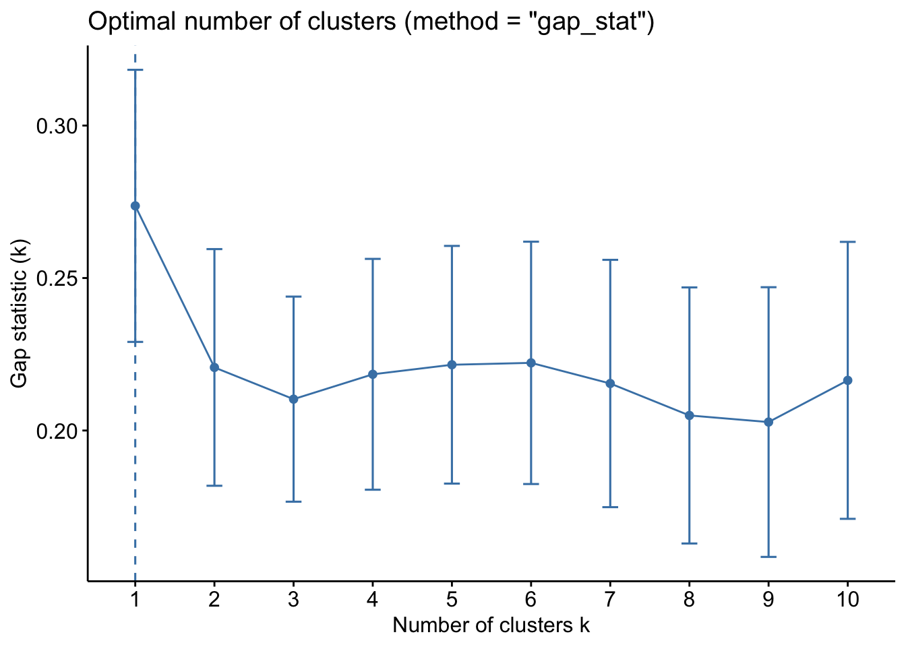
WarningThe 6-cluster recommendation is thinner than it looks
firstmax returns 1, which is not a usable answer. The Hands-on reference then picks 6 on the grounds that it gives the largest gap statistic among the remaining options. Checking the printed table, the gaps for k = 5 and k = 6 are 0.22156 and 0.22218. The difference is 0.0006. The standard error on each of those estimates is about 0.039.
So 6 beats 5 by roughly one sixtieth of a standard error. It is the maximum, technically, but the gap statistic is not the thing making the decision here.
7.7 Interpreting the dendrograms
plot(hclust_ward, cex = 0.6)
rect.hclust(hclust_ward,
k = 6,
border = 2:5)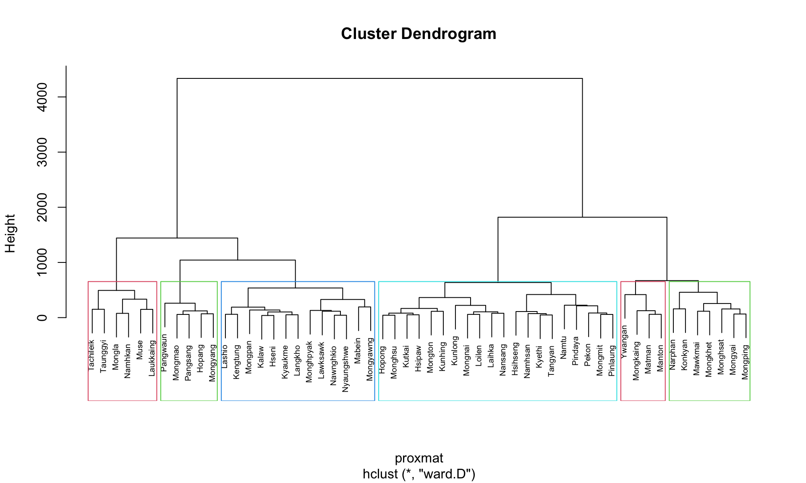
7.8 Visually-driven hierarchical clustering analysis
7.8.1 Transforming the data frame into a matrix
shan_ict_mat <- data.matrix(shan_ict)7.8.2 Plotting interactive cluster heatmap using heatmaply()
heatmaply(normalize(shan_ict_mat),
Colv=NA,
dist_method = "euclidean",
hclust_method = "ward.D",
seriate = "OLO",
colors = Blues,
k_row = 6,
margins = c(NA,200,60,NA),
fontsize_row = 4,
fontsize_col = 5,
main="Geographic Segmentation of Shan State by ICT indicators",
xlab = "ICT Indicators",
ylab = "Townships of Shan State"
)I notice that this heatmap normalises the matrix first, unlike the dendrogram above it, so the row ordering here comes from a different distance matrix than proxmat.
7.9 Mapping the clusters formed
groups <- as.factor(cutree(hclust_ward, k=6))shan_sf_cluster <- cbind(shan_sf, as.matrix(groups)) %>%
rename(`CLUSTER`=`as.matrix.groups.`)qtm(shan_sf_cluster, fill = "CLUSTER")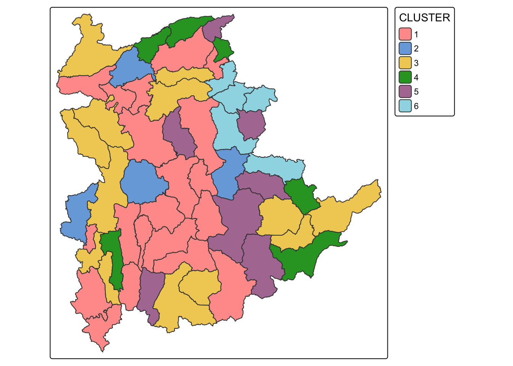
Cluster sizes are 20, 4, 13, 6, 7 and 5.Counting properly against the contiguity graph built in section 8.2, those six clusters break into 24 spatially disconnected pieces: 4, 4, 5, 5, 5 and 1. The four-township cluster sits in four separate places, one township each. Only cluster 6 forms a single block. That is the number the constrained methods have to beat.
8. Spatially Constrained Clustering: SKATER approach
8.1 Converting into SpatialPolygonsDataFrame
shan_sp <- as_Spatial(shan_sf)8.2 Computing Neighbour List
shan.nb <- poly2nb(shan_sp)
summary(shan.nb)Neighbour list object:
Number of regions: 55
Number of nonzero links: 264
Percentage nonzero weights: 8.727273
Average number of links: 4.8
Link number distribution:
2 3 4 5 6 7 8 9
5 9 7 21 4 3 5 1
5 least connected regions:
3 5 7 9 47 with 2 links
1 most connected region:
8 with 9 links55 regions, 264 non-zero links, 8.73% of the full matrix, an average of 4.8 neighbours per township. Five townships have only 2 neighbours and one has 9.
coords <- st_coordinates(
st_centroid(st_geometry(shan_sf)))plot(st_geometry(shan_sf),
border=grey(.5))
plot(shan.nb,
coords,
col="blue",
add=TRUE)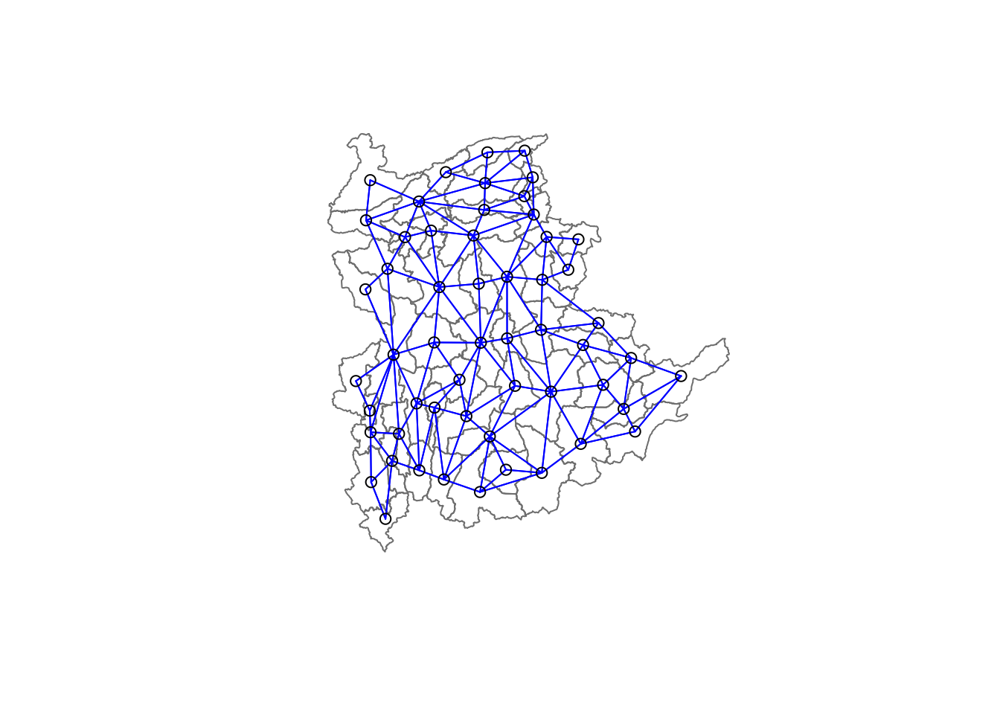
8.3 Computing minimum spanning tree
8.3.1 Calculating edge costs
lcosts <- nbcosts(shan.nb, shan_ict)Edge costs range from 47.8 to 721.9. They are attribute distances, not geographic ones: two adjacent townships with similar ICT profiles get a cheap edge regardless of how far apart their centroids sit.
shan.w <- nb2listw(shan.nb,
lcosts,
style="B")
summary(shan.w)Characteristics of weights list object:
Neighbour list object:
Number of regions: 55
Number of nonzero links: 264
Percentage nonzero weights: 8.727273
Average number of links: 4.8
Link number distribution:
2 3 4 5 6 7 8 9
5 9 7 21 4 3 5 1
5 least connected regions:
3 5 7 9 47 with 2 links
1 most connected region:
8 with 9 links
Weights style: B
Weights constants summary:
n nn S0 S1 S2
B 55 3025 76267.65 58260785 5220160048.3.2 Computing minimum spanning tree
shan.mst <- mstree(shan.w)class(shan.mst)[1] "mst" "matrix"dim(shan.mst)[1] 54 354 rows and 3 columns. One edge fewer than the 55 nodes, as a spanning tree requires, with the third column holding the cost. The tree’s total cost is 9,686.6, down from the 264 edges the contiguity graph started with.
head(shan.mst) [,1] [,2] [,3]
[1,] 54 48 47.79331
[2,] 54 17 109.08506
[3,] 54 45 127.42203
[4,] 45 52 146.78891
[5,] 52 13 110.55197
[6,] 13 28 92.79567plot(st_geometry(shan_sf),
border=gray(.5))
plot.mst(shan.mst,
coords,
col="blue",
cex.lab=0.7,
cex.circles=0.005,
add=TRUE)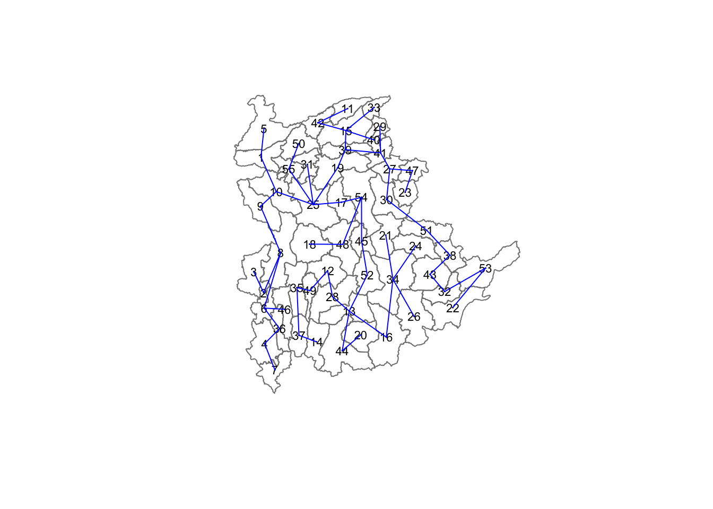
8.4 Computing spatially constrained clusters using SKATER method
clust6 <- spdep::skater(edges = shan.mst[,1:2],
data = shan_ict,
method = "euclidean",
ncuts = 5)str(clust6)List of 8
$ groups : num [1:55] 3 3 6 3 3 3 3 3 3 3 ...
$ edges.groups:List of 6
..$ :List of 3
.. ..$ node: num [1:22] 13 48 54 55 45 37 34 16 25 52 ...
.. ..$ edge: num [1:21, 1:3] 48 55 54 37 34 16 45 25 13 13 ...
.. ..$ ssw : num 3423
..$ :List of 3
.. ..$ node: num [1:18] 47 27 53 38 42 15 41 51 43 32 ...
.. ..$ edge: num [1:17, 1:3] 53 15 42 38 41 51 15 27 15 43 ...
.. ..$ ssw : num 3759
..$ :List of 3
.. ..$ node: num [1:11] 2 6 8 1 36 4 10 9 46 5 ...
.. ..$ edge: num [1:10, 1:3] 6 1 8 36 4 6 8 10 10 9 ...
.. ..$ ssw : num 1458
..$ :List of 3
.. ..$ node: num [1:2] 44 20
.. ..$ edge: num [1, 1:3] 44 20 95
.. ..$ ssw : num 95
..$ :List of 3
.. ..$ node: num 23
.. ..$ edge: num[0 , 1:3]
.. ..$ ssw : num 0
..$ :List of 3
.. ..$ node: num 3
.. ..$ edge: num[0 , 1:3]
.. ..$ ssw : num 0
$ not.prune : NULL
$ candidates : int [1:6] 1 2 3 4 5 6
$ ssto : num 12613
$ ssw : num [1:6] 12613 10977 9962 9540 9123 ...
$ crit : num [1:2] 1 Inf
$ vec.crit : num [1:55] 1 1 1 1 1 1 1 1 1 1 ...
- attr(*, "class")= chr "skater"ccs6 <- clust6$groups
ccs6 [1] 3 3 6 3 3 3 3 3 3 3 2 1 1 1 2 1 1 1 2 4 1 2 5 1 1 1 2 1 2 2 1 2 2 1 1 3 1 2
[39] 2 2 2 2 2 4 1 3 2 1 1 1 2 1 2 1 1table(ccs6)ccs6
1 2 3 4 5 6
22 18 11 2 1 1
WarningTwo clusters of one township
The group sizes come out as 22, 18, 11, 2, 1 and 1. The reference describes the first cluster as having 12 observations, which doesn’t match what my data produces. I couldn’t tell whether that came from a different underlying dataset, an older package version, or something else in the setup perhaps.
ssto is 12,612.5 and the within-group sum of squares falls to 8,735.2 after five cuts.
plot(st_geometry(shan_sf),
border=gray(.5))
plot(clust6,
coords,
cex.lab=.7,
groups.colors=c("red","green","blue", "brown", "pink"),
cex.circles=0.005,
add=TRUE)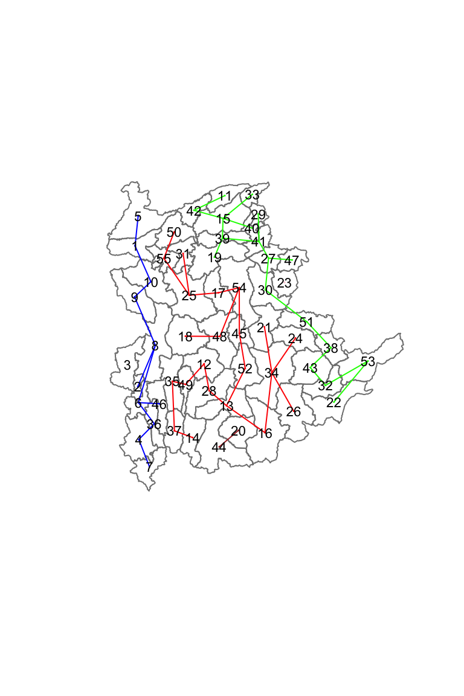
Two small things about this chunk, both harmless. groups.colors is given five colours for six groups, and add = TRUE is not an argument of plot.skater() at all, so it falls through to plot() and raises “add is not a graphical parameter”. I surpressed the warning as warning: false and the pruned tree still draws over the township boundaries correctly.
8.5 Visualising the clusters in choropleth map
groups_mat <- as.matrix(clust6$groups)
shan_sf_spatialcluster <- cbind(shan_sf_cluster, as.factor(groups_mat)) %>%
rename(`SP_CLUSTER`=`as.factor.groups_mat.`)
qtm(shan_sf_spatialcluster, fill = "SP_CLUSTER")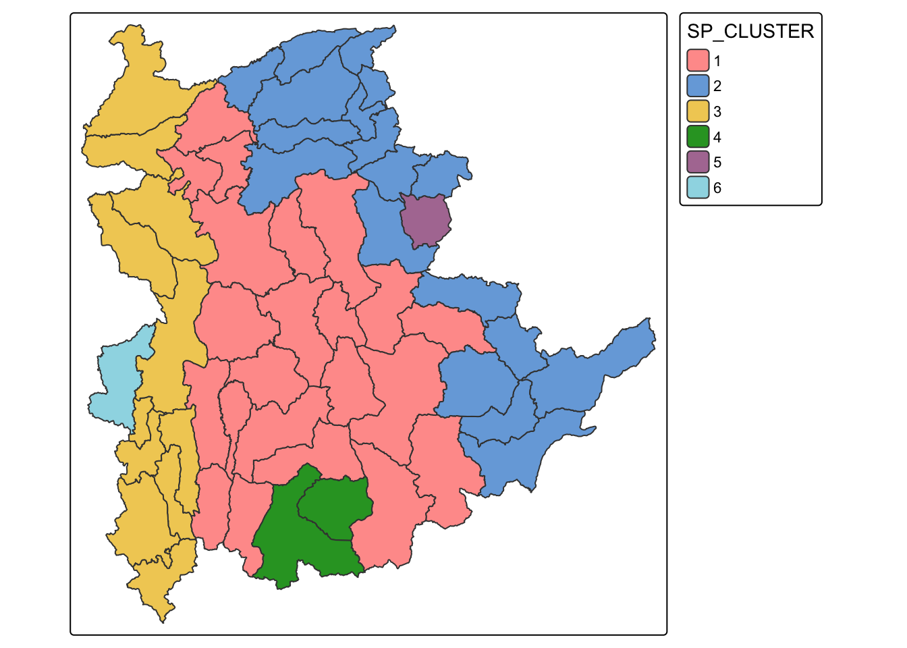
hclust.map <- qtm(shan_sf_cluster,
fill = "CLUSTER") +
tm_borders(col_alpha = 0.5)
shclust.map <- qtm(shan_sf_spatialcluster,
fill = "SP_CLUSTER") +
tm_borders(col_alpha = 0.5)
tmap_arrange(hclust.map, shclust.map,
asp=NA, ncol=2)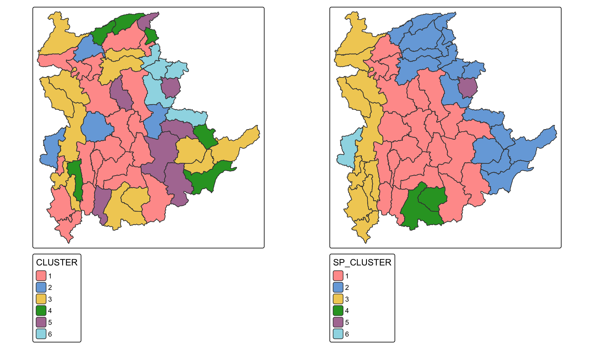
Side by side, the difference is exactly what the constraint promises. The hierarchical map scatters each cluster across the state in 24 separate pieces. The SKATER map has 6 clusters in 6 pieces, one contiguous block each, by construction.
9. Spatially Constrained Clustering: ClustGeo Method
9.1 A short note about ClustGeo package
ClustGeo works from two dissimilarity matrices, D0 in the attribute space and D1 in the constraint space, combined at each merge step through a mixing parameter alpha between 0 and 1 (Chavent et al., 2018). At alpha = 0 geography is ignored entirely. At alpha = 1 only geography counts. The aim is to find a value that buys spatial coherence without giving away too much attribute homogeneity, which choicealpha() helps with.
Unlike SKATER, this is a soft constraint. Nothing in the algorithm guarantees the resulting clusters are contiguous, it only makes distant townships expensive to merge.
9.2 Ward-like hierarchical clustering: ClustGeo
nongeo_cluster <- hclustgeo(proxmat)
plot(nongeo_cluster, cex = 0.5)
rect.hclust(nongeo_cluster,
k = 6,
border = 2:5)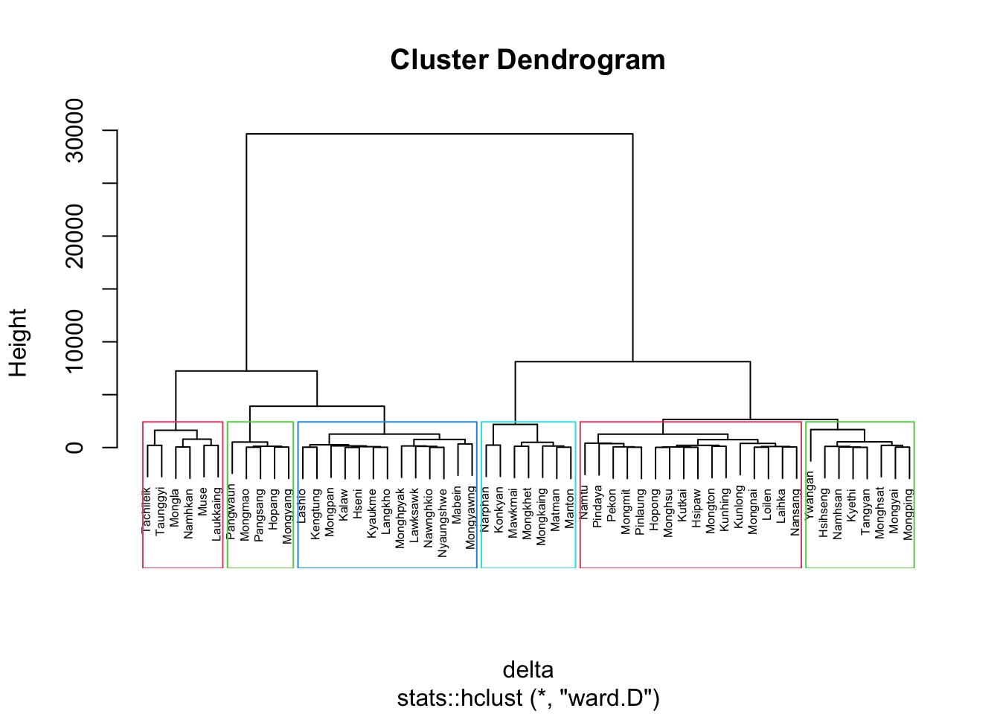
9.2.1 Mapping the clusters formed
groups <- as.factor(cutree(nongeo_cluster, k=6))shan_sf_ngeo_cluster <- cbind(shan_sf, as.matrix(groups)) %>%
rename(`CLUSTER` = `as.matrix.groups.`)qtm(shan_sf_ngeo_cluster, fill = "CLUSTER")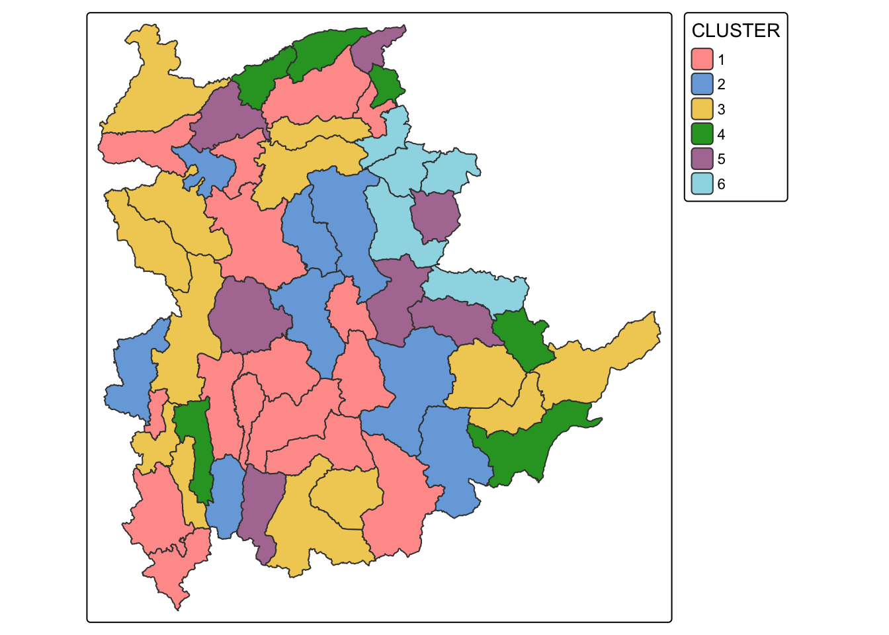
Still fragmented, and slightly more so than section 7.9: 28 disconnected pieces across the six clusters, against 24 for the ward.D solution.
9.3 Spatially Constrained Hierarchical Clustering
dist <- st_distance(shan_sf, shan_sf)
distmat <- as.dist(dist)st_distance() on a geographic CRS returns great circle distances in metres through s2, not degrees, so the constraint space is in sensible units without reprojecting. The largest township-to-township distance in the state is 444 km. as.dist() strips the units class and returns a plain dist object, which is what choicealpha() needs.
cr <- choicealpha(proxmat, distmat, range.alpha = seq(0, 1, 0.1), K=6, graph = TRUE)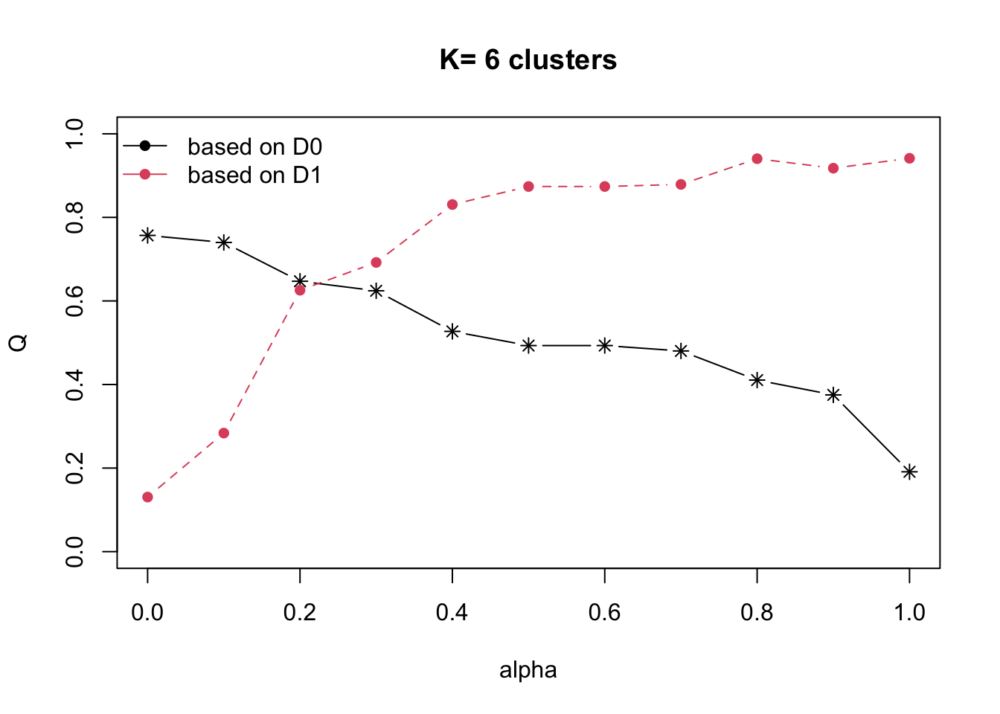
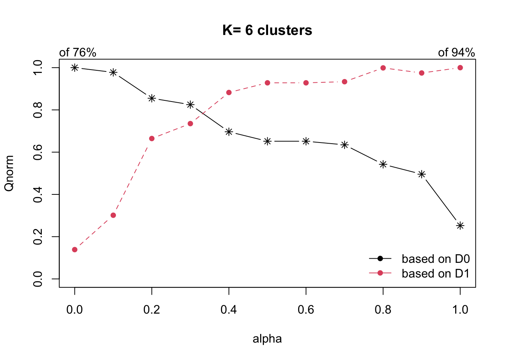
TipReading the alpha plots as numbers
The two curves are easier to judge from cr$Q and cr$Qnorm than from the plot. At alpha = 0, the proportion of explained pseudo-inertia is 0.757 in the attribute space and 0.131 in the constraint space. At alpha = 1 the constraint space reaches 0.941.
At alpha = 0.2, attribute homogeneity drops to 0.647 and geographic homogeneity rises to 0.626. That is a loss of 0.11 and a gain of 0.50, which matches the figures quoted in the Lesson 6 slides for this dataset. Pushing to alpha = 0.3 costs another 0.02 of attribute quality for 0.07 more geographic coherence, so the returns are already flattening. 0.2 sits just past the crossover of the two curves and is a defensible pick.
One curiosity in the table: alpha = 0.5 and alpha = 0.6 produce identical Q values. The criterion changes continuously with alpha but the resulting tree does not, so a range of alpha values can give the same partition.
clustG <- hclustgeo(proxmat, distmat, alpha = 0.2)groups <- as.factor(cutree(clustG, k=6))shan_sf_Gcluster <- cbind(shan_sf, as.matrix(groups)) %>%
rename(`CLUSTER` = `as.matrix.groups.`)qtm(shan_sf_Gcluster, fill = "CLUSTER")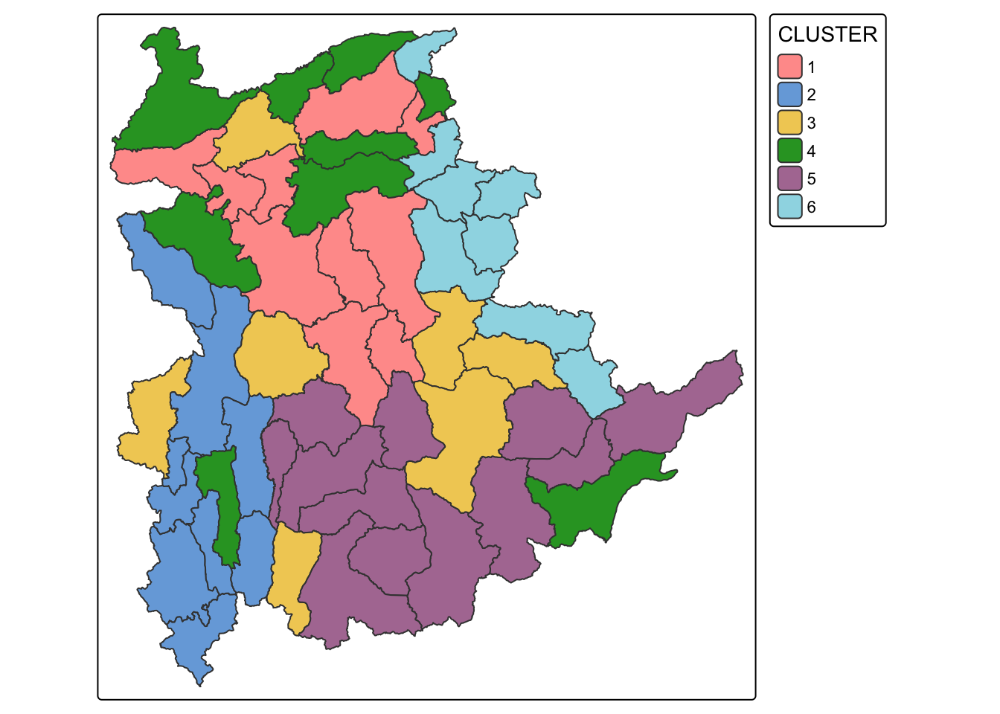
The sizes are the most balanced of the three methods: 10, 9, 7, 9, 12 and 8. No singletons, no cluster holding a third of the state. The map is visibly more regionalised than section 9.2.1 without being forced into single blocks, and counting pieces confirms the middle position: 18 in total, against 28 unconstrained and 6 for SKATER. Two of the six are single blocks, two more are in two pieces, and one still scatters across seven. The soft constraint does what it claims, and it does not pretend to guarantee contiguity.
10. Visual Interpretation of Clusters
10.1 Visualising individual clustering variable
ggplot(data = shan_sf_ngeo_cluster,
aes(x = CLUSTER, y = RADIO_PR)) +
geom_boxplot()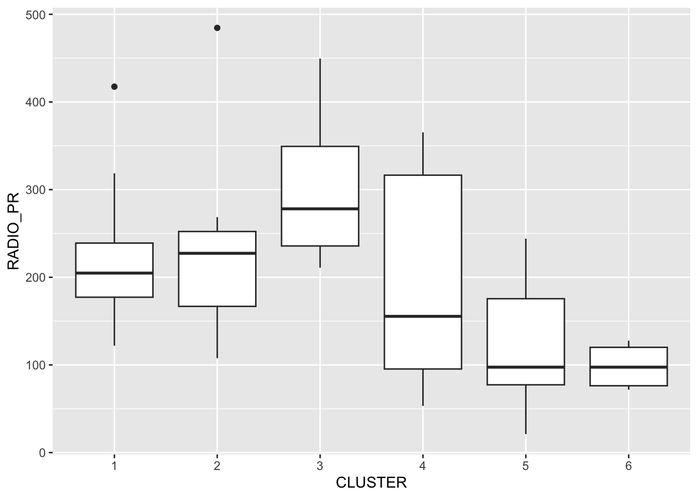
Ranking the clusters by mean radio penetration gives 3 > 2 > 1 > 4 > 5 > 6. The hands-on showed ranking as 3, 2, 1, 4, 6, 5. The first four agree, and the last two are the other way round in my run: cluster 6 averages 98.6 radios per thousand and cluster 5 averages 124.0.
10.2 Multivariate Visualisation
ggparcoord(data = shan_sf_ngeo_cluster,
columns = c(17:21),
scale = "globalminmax",
alphaLines = 0.2,
boxplot = TRUE,
title = "Multiple Parallel Coordinates Plots of ICT Variables by Cluster") +
facet_grid(~ CLUSTER) +
theme(axis.text.x = element_text(angle = 30))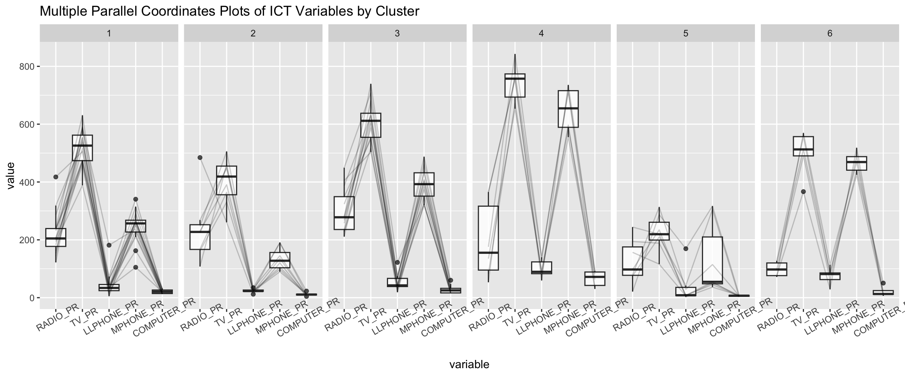
Positions 17 to 21 are RADIO_PR, TV_PR, LLPHONE_PR, MPHONE_PR and COMPUTER_PR, which I checked back in section 5.2.1. Hard-coded column indices are fragile, and this one only holds because the join produced exactly the column order it did.
shan_sf_ngeo_cluster %>%
st_set_geometry(NULL) %>%
group_by(CLUSTER) %>%
summarise(mean_RADIO_PR = mean(RADIO_PR),
mean_TV_PR = mean(TV_PR),
mean_LLPHONE_PR = mean(LLPHONE_PR),
mean_MPHONE_PR = mean(MPHONE_PR),
mean_COMPUTER_PR = mean(COMPUTER_PR))# A tibble: 6 × 6
CLUSTER mean_RADIO_PR mean_TV_PR mean_LLPHONE_PR mean_MPHONE_PR
<chr> <dbl> <dbl> <dbl> <dbl>
1 1 221. 521. 44.2 246.
2 2 237. 402. 23.9 134.
3 3 300. 611. 52.2 392.
4 4 196. 744. 99.0 651.
5 5 124. 224. 38.0 132.
6 6 98.6 499. 74.5 468.
# ℹ 1 more variable: mean_COMPUTER_PR <dbl>11. Extras
11.1 The two methods the chapter names but never runs
Section 7.6 lists elbow, average silhouette and gap statistic as the three common ways to choose k, but only runs the gap statistic. NbClust gets loaded in section 3 and mentioned in a note, but never actually called. Since the choice of six clusters drives every map in this document, I wanted to see what the other two methods say.
fviz_nbclust(shan_ict, hcut, method = "wss", k.max = 10)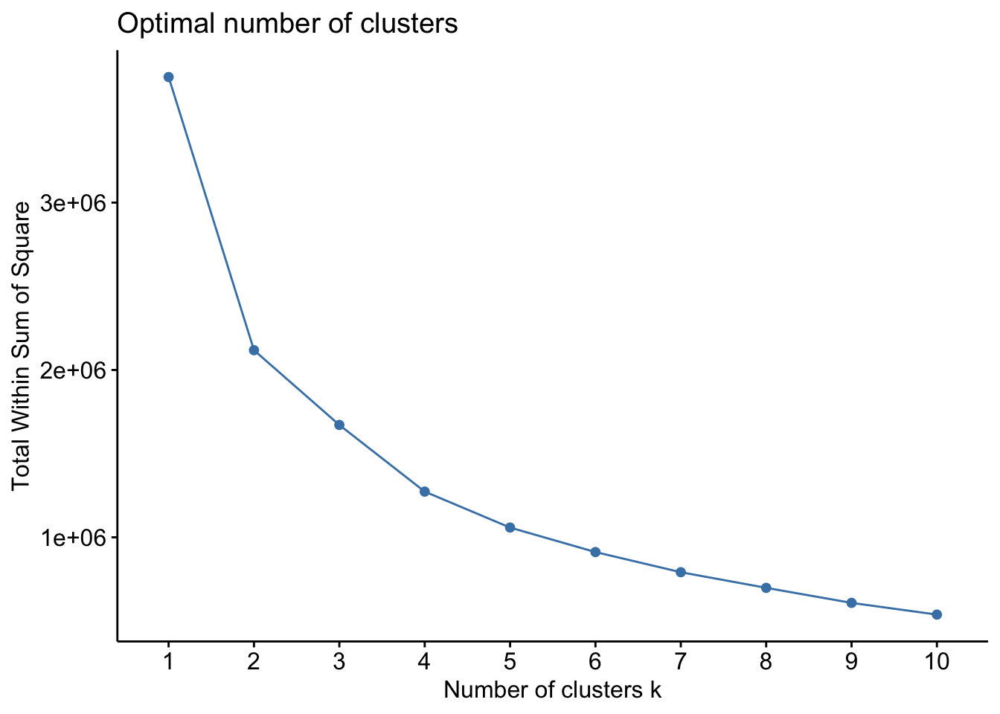
fviz_nbclust(shan_ict, hcut, method = "silhouette", k.max = 10)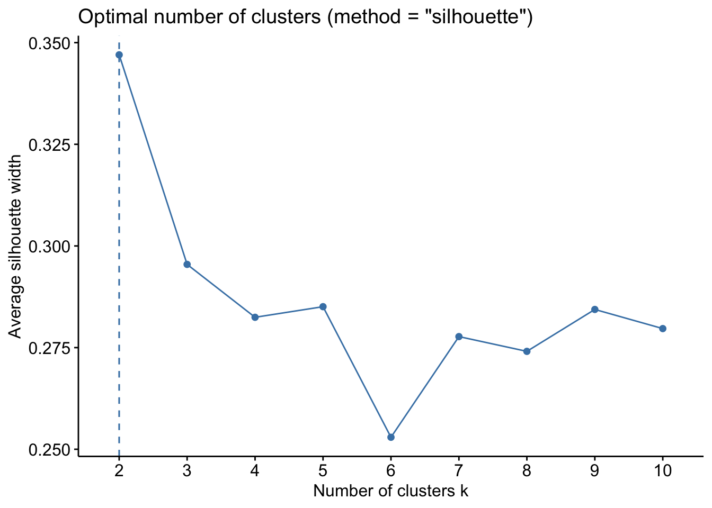
set.seed(12345)
nbc <- NbClust(shan_ict, distance = "euclidean",
min.nc = 2, max.nc = 10, method = "ward.D", index = "all")table(nbc$Best.nc["Number_clusters",])
0 1 2 3 4 5 6 10
2 1 9 2 6 3 1 2 The elbow curve bends hardest between k = 2 and k = 3, where within-cluster sum of squares falls from 3.75 million to 2.12 million and then 1.67 million. From k = 5 onward each extra cluster buys between 70,000 and 150,000, and there is no clear elbow at 6.
Average silhouette width peaks at k = 2 with 0.347 and never recovers. At k = 6 it is 0.253, the lowest value across the whole range tested. NbClust runs 26 indices and votes 9 for k = 2, 6 for k = 4, 3 for k = 5, 2 each for k = 3 and k = 10, and exactly 1 for k = 6, with three indices returning 0 or 1 and abstaining in effect.
11.2 Would standardising have changed the answer?
Section 7.2 raised this: the chapter standardises two ways and then clusters the raw values, where mobile phone and television carry 81% of the variance and computer carries 0.6%. Running the same ward.D clustering on each version answers how much that matters.
g_raw <- cutree(hclust(dist(shan_ict), method = "ward.D"), 6)
g_z <- cutree(hclust(dist(scale(shan_ict)), method = "ward.D"), 6)
g_mm <- cutree(hclust(dist(normalize(shan_ict)), method = "ward.D"), 6)
rbind(raw = table(g_raw), z_score = table(g_z), min_max = table(g_mm)) 1 2 3 4 5 6
raw 20 4 13 6 7 5
z_score 11 12 9 8 9 6
min_max 15 8 9 8 7 8table(raw = g_raw, z_score = g_z) z_score
raw 1 2 3 4 5 6
1 4 11 4 0 0 1
2 1 0 0 0 3 0
3 6 0 5 2 0 0
4 0 0 0 5 0 1
5 0 1 0 0 5 1
6 0 0 0 1 1 3adj_rand <- function(a, b) {
t <- table(a, b); n <- sum(t)
s1 <- sum(choose(t, 2))
s2 <- sum(choose(rowSums(t), 2)); s3 <- sum(choose(colSums(t), 2))
expected <- s2 * s3 / choose(n, 2)
(s1 - expected) / ((s2 + s3) / 2 - expected)
}
c(raw_vs_z = adj_rand(g_raw, g_z),
raw_vs_minmax = adj_rand(g_raw, g_mm),
z_vs_minmax = adj_rand(g_z, g_mm)) raw_vs_z raw_vs_minmax z_vs_minmax
0.3000059 0.4173657 0.7870286 The adjusted Rand index between the raw and Z-score solutions is 0.30. For reference, 0 is what two independent random partitions score and 1 is identical. Raw against min-max is 0.42. The two standardised solutions agree with each other at 0.79, which is the useful part: they disagree with the raw solution far more than they disagree with each other.
The sizes tell the same story. Raw gives 20, 4, 13, 6, 7, 5 with one cluster holding over a third of the state. Z-scores give 11, 12, 9, 8, 9, 6, much more even, because land line and computer stop being rounding errors in the distance calculation and start separating townships.
11.3 What the spatial constraint actually costs
The reference compares the hierarchical and SKATER maps visually and says one is fragmented. Both halves of that trade-off can be measured: within-cluster sum of squares for homogeneity, and the number of connected pieces each cluster breaks into for contiguity.
g_hclust <- cutree(hclust_ward, 6)
g_ngeo <- cutree(nongeo_cluster, 6)
g_skater <- clust6$groups
g_clustgeo <- cutree(clustG, 6)
pieces <- function(g) {
sum(sapply(unique(g), function(k)
n.comp.nb(subset.nb(shan.nb, seq_along(g) %in% which(g == k)))$nc))
}
wss <- function(g, dat) {
sum(sapply(unique(g), function(k) {
x <- dat[g == k, , drop = FALSE]
if (nrow(x) < 2) return(0)
sum(scale(x, scale = FALSE)^2)
}))
}
X <- as.matrix(shan_ict)
total_ss <- sum(scale(X, scale = FALSE)^2)
data.frame(
solution = c("hclust ward.D", "hclustgeo alpha=0", "SKATER", "ClustGeo alpha=0.2"),
sizes = sapply(list(g_hclust, g_ngeo, g_skater, g_clustgeo),
function(g) paste(sort(table(g), decreasing = TRUE), collapse = "/")),
wss_pct = round(100 * sapply(list(g_hclust, g_ngeo, g_skater, g_clustgeo),
wss, dat = X) / total_ss, 1),
spatial_pieces = sapply(list(g_hclust, g_ngeo, g_skater, g_clustgeo), pieces)
) solution sizes wss_pct spatial_pieces
1 hclust ward.D 20/13/7/6/5/4 23.9 24
2 hclustgeo alpha=0 16/13/8/7/6/5 24.3 28
3 SKATER 22/18/11/2/1/1 50.0 6
4 ClustGeo alpha=0.2 12/10/9/9/8/7 35.3 18| Solution | Sizes | Within-cluster SS | Pieces |
|---|---|---|---|
| hclust ward.D | 20/13/7/6/5/4 | 23.9% | 24 |
| hclustgeo alpha=0 | 16/13/8/7/6/5 | 24.3% | 28 |
| SKATER | 22/18/11/2/1/1 | 50.0% | 6 |
| ClustGeo alpha=0.2 | 12/10/9/9/8/7 | 35.3% | 18 |
SKATER is the expensive one. Perfect contiguity, 6 pieces for 6 clusters, at the cost of doubling unexplained within-cluster variation from 24% to 50%. Part of that is the two singleton clusters, which contribute nothing to homogeneity while using up two of the six slots.
ClustGeo at alpha = 0.2 lands in between on both axes: 35% within-cluster sum of squares and 18 pieces. It is the reasonable middle position, and it is worth being clear that its 18 pieces mean it has not delivered regions in the strict sense. Six contiguous regions is SKATER’s guarantee and nobody else’s.
The choice follows from what the output is for. A policy map that has to name contiguous administrative regions needs SKATER or something like it, and should accept the homogeneity cost.
11.4 Fixing SKATER’s singletons with crit
Section 8.4 produced clusters of 22, 18, 11, 2, 1 and 1. skater() takes a crit argument that sets a minimum group size and refuses cuts that violate it, which the reference never mentions. The question is what enforcing a floor costs.
for (cr in c(0, 3, 5, 8)) {
cl <- if (cr == 0) {
spdep::skater(shan.mst[,1:2], shan_ict, method = "euclidean", ncuts = 5)
} else {
spdep::skater(shan.mst[,1:2], shan_ict, method = "euclidean", ncuts = 5, crit = cr)
}
cat("crit =", cr,
"| clusters:", length(unique(cl$groups)),
"| sizes:", paste(sort(table(cl$groups), decreasing = TRUE), collapse = "/"),
"| final ssw:", round(tail(cl$ssw, 1), 1), "\n")
}crit = 0 | clusters: 6 | sizes: 22/18/11/2/1/1 | final ssw: 8735.2
crit = 3 | clusters: 6 | sizes: 15/12/12/8/4/4 | final ssw: 8772.7
crit = 5 | clusters: 6 | sizes: 14/12/11/8/5/5 | final ssw: 8828.8
crit = 8 | clusters: 5 | sizes: 16/12/10/9/8 | final ssw: 9566.6 Almost nothing, as it turns out. A floor of 3 gives 15, 12, 12, 8, 4, 4 with a final within-group sum of squares of 8,772.7 against 8,735.2 unconstrained, which is 0.4% worse. A floor of 5 gives 14, 12, 11, 8, 5, 5 at 8,828.8, or 1.1% worse. Both still produce six fully contiguous regions.
A floor of 8 breaks it: only five groups come out, because after four cuts no remaining edge can be removed without leaving a subgraph under the minimum.
For a segmentation that is meant to support planning, trading 0.4% of homogeneity to avoid two regions of one township each looks like a good deal maybe?
Summary of Adjustments
| Location in reference | Issue found | Correction applied |
|---|---|---|
12.5.2.2, 12.8.6 (all tmap calls) |
Written in tmap v3 syntax: tm_fill(col=, n=, style=, title=), tm_borders(alpha=), standalone tm_legend(), qtm() with a positional variable |
Translated to tmap v4: tm_polygons(fill=, fill.scale=tm_scale_intervals(), fill.legend=tm_legend()), tm_borders(col_alpha=), qtm(fill=). Border transparency is col_alpha because borders are lines. Same translation applied in Exercises 5A and 5B |
12.8.5 (plot(clust6, ..., add = TRUE)) |
add is not an argument of plot.skater(), so it passes through to plot() and raises “add is not a graphical parameter”. groups.colors also supplies five colours for six groups |
Left the code as written. The figure still draws over the boundaries correctly and the warning is suppressed by the YAML, noted so it is not a surprise when run interactively |
| 12.8.5 (SKATER cluster sizes) | Prose describes the first cluster as having 12 observations. This data gives 22, 18, 11, 2, 1, 1, including two single-township clusters | Reported the sizes this data produces, identified the singletons as Ywangan and Narphan, and explored skater(crit=) as a fix in section 11.5 |
| 12.10.1 (boxplot reading) | Cluster ranking by mean radio penetration given as 3, 2, 1, 4, 6, 5 | On this data the order is 3, 2, 1, 4, 5, 6. |
References
- Assunção, R. M., Neves, M. C., Câmara, G., & Costa Freitas, C. D. (2006). Efficient regionalization techniques for socio-economic geographical units using minimum spanning trees. International Journal of Geographical Information Science, 20(7), 797-811.
- Chavent, M., Kuentz-Simonet, V., Labenne, A., & Saracco, J. (2018). ClustGeo: an R package for hierarchical clustering with spatial constraints. Computational Statistics, 33(4), 1799-1822.
- Kam, T. S. (2026). ISSS626 Lesson 6: Geographic Segmentation with Spatial Clustering [Lecture slides]. Singapore Management University.